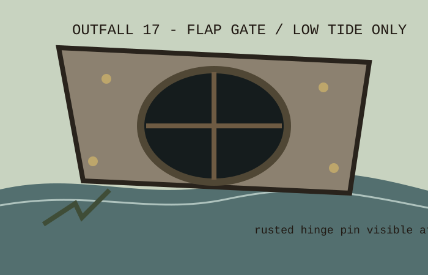

Never stand in the oval mouth to prove clearance. The department already believes in clearance. Bring a mirror, a hook, and the old bucket with the municipal number scratched off.
End of drainage file. The binder index is the only dry way back.